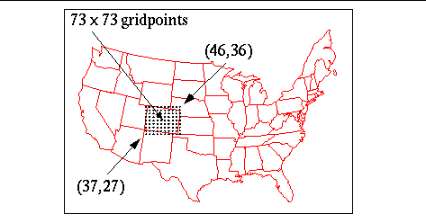
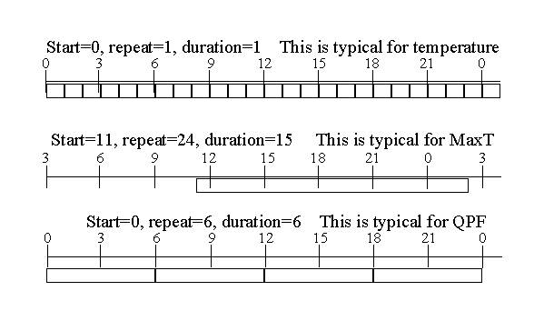

This information is provided for you to
help
you understand the format of serverConfig.py. You should NEVER
change
the original serverConfig.py since your changes will be overwritten
with
the next upgrade. See the server
configuration overview
for information on how to make changes that
are supported to the server.
The excerpts from the serverConfig.py may not be complete or up-to-date; they serve as examples only.
def siteImport(modName):
try:
fp, path, des =
imp.find_module(modName)
if fp:
fp.close()
except ImportError:
return 0
globals()[modName] = __import__(modName)
return 1
#----------------------------------------------------------------------------
# USEFUL DEFINES
#----------------------------------------------------------------------------
import siteConfig, LogStream, config
GFESUITE_SITEID = siteConfig.GFESUITE_SITEID
GFESUITE_MHSID = siteConfig.GFESUITE_MHSID
GFESUITE_SERVER = siteConfig.GFESUITE_SERVER
GFESUITE_HOME = siteConfig.GFESUITE_HOME
GFESUITE_PORT = int(siteConfig.GFESUITE_PORT)
GFESUITE_LOGDIR = siteConfig.GFESUITE_LOGDIR
GFESUITE_PRDDIR = siteConfig.GFESUITE_PRDDIR
| Attribute | Scalar | Vector | Weather | Discrete | Description |
| weather element name | yes | yes | yes | yes | no punctuation or spaces are allowed with the exception of an underscore to denote a level for the weather element, that is different from SFC. To denote a weather element for the surface, you can use either parmName or parmName_SFC. To denote a weather element for a non-surface element, use the underscore notation, such as parmName_level. |
| type | yes | yes | yes | yes | defines the weather element type, must be SCALAR, VECTOR, WEATHER, or DISCRETE |
| units | yes | yes | yes | yes | defines the units used for this weather element |
| descriptive name | yes | yes | yes | yes | descriptive name for the weather element |
| maximum possible value | yes | yes | no | no | The maximum allowable value for scalar, and the maximum allowable value for the magnitude component of vector. |
| minimum possible value | yes | yes | no | no | The minimum allowable value for scalar, and the minimum allowable value for the magnitude component of vector. |
| precision | yes | yes | no | no | defines the resolution of the weather element in terms of the number of significant decimal points. For example, a precision of 0 indicates a resolution of 1.0, and a precision of 2 indicates a resolution of 0.01. Only applies to scalar fields and the magnitude component for vector. |
| rate-dependent weather element | yes | yes | no | no | If specified to be a rate-dependent parm, then changes in valid time of a grid will modify the data values in that grid to preserve the calculated rate. Values of 1 or 0, YES or NO are permitted. |
| overlapping discrete element | no | no | no | yes | If 1 or YES, then the discrete weather element permits overlapping values, i.e., a grid point may assume the value of more than 1 value. |
| key definition | no | no | no | yes | Defines the allowable keys and their definitions for the discrete weather element |
| sizeOfAuxDataField |
no |
no |
no |
yes (optional) |
If specified, indicates the size
(as an integer) of the discrete auxiliary data field (string
size). Aux data can be from 0 to this length. If
sizeOfAuxDataField is not specified, then the discrete element will not
support auxiliary data. |
| Weather Element Type | Format of Definition |
| SCALAR | VariableName = ("name", type, "units", "descriptive name", maxValue, minValue, precision, rateWE) |
| VECTOR | VariableName = ("name", type, "units", "descriptive name", maxValue, minValue, precision, rateWE) |
| WEATHER | VariableName = ("name", type, "units", "descriptive name") |
| DISCRETE | VariableName = ("name", type, "units", "descriptive
name", overlapAllowed,
keyDefinition) VariableName = ("name", type, "units", "descriptive name", overlapAllowed, keyDefinition, sizeOfAuxDataField) |
For discrete, the key definition is in this form:
keyDefName = [('keyName1', 'keyDescription1'), ('keyName2',
'key2Description'),
.... ]
For overlapping discrete, the first key must be "<None>".
Example entries for SCALAR, VECTOR, WEATHER, and DISCRETE elements are shown below:
#---------------------------------------------------------------------------
#
# Weather Element configuration section.
#
#---------------------------------------------------------------------------
SCALAR = 'Scalar'
VECTOR = 'Vector'
WEATHER = 'Weather'
DISCRETE = 'Discrete'
NO = 0
YES = 1
# Standard Public Weather Elements
Temp = ("T", SCALAR, "fahrenheit", "Surface
Temperature",
120.0,
-60.0, 0, NO)
Wind = ("Wind", VECTOR, "knots", "Surface
Wind",
80.0,
0.0, 0, NO)
Weather = ("Wx", WEATHER, "coverage, intensity, type", "Weather")
TestKeys = [("L", "Low"),("M",
"Medium"), ("H", "High")]
TestKey = ("TestKey", DISCRETE, "categories", "TestKey", NO,
TestKeys)
# Scalar/Vector Weather Elements that Require Extra Precision
(due
to their
# use in calculations)
#ExtraWEPrecision = ['T', 'Td', 'RH']
#ExtraWEPrecision = [('T', 1), 'Td', ('RH', 2)]
ExtraWEPrecision = []
# list of possible visibilities
visibilities = ['<NoVis>', '0SM', '1/4SM', '1/2SM', '3/4SM',
'1SM', '11/2SM',
'2SM', '21/2SM', '3SM', '4SM', '5SM', '6SM', 'P6SM']
The symbol entry cannot contain spaces. This section simply defines all of the possible coverages and probabilities. Another section of the configuration file relates these to each weather element.
# list of possible coverages and probabilities
NOCOV = ('<NoCov>', 'No Coverage')
ISOD = ('Iso', 'Isolated')
SCT = ('Sct', 'Scattered')
NUM = ('Num', 'Numerous')
WIDE = ('Wide', 'Widespread')
OCNL = ('Ocnl', 'Occasional')
SCHC = ('SChc', 'Slight Chance Of')
CHC = ('Chc', 'Chance Of')
LKLY = ('Lkly', 'Likely')
DEFN = ('Def', 'Definite')
PATCHY = ('Patchy', 'Patchy')
The symbol entry cannot contain spaces. This section simply defines all of the possible intensities. Another section of the configuration file relates these to each weather element. Note the "moderate" intensity which is normally indicated by a space or null-character in meteorology. Since the software cannot have a space, the character 'm' has been chosen to indicate moderate. Since some weather types may not have an intensity, such as blowing snow, a no intensity entry has been defined. Each weather type must have at least one intensity associated with it, even if is the no intensity entry.
# list of possible intensities
INTEN_NONE = ('<NoInten>', 'No intensity')
INTEN_VERYLIGHT = ('--', 'Very Light')
INTEN_LIGHT = ('-', 'Light')
INTEN_MOD = ('m', 'Moderate')
INTEN_HEAVY = ('+', 'Heavy')
For convenience in defining the weather types, intensities groupings may be created by declaring arrays. In this case an array named PCPINTEN has been created with the very light, light, moderate, and heavy intensities. There is a defined order to the groupings. They are usually ordered in increasing intensity.
# special intensity groupings
PCPINTEN =[INTEN_VERYLIGHT, INTEN_LIGHT, INTEN_MOD, INTEN_HEAVY]
The symbol entry cannot contain spaces. This section simply defines all of the possible attributes. Another section of the configuration file relates these to each weather element. Note that there is no entry for no attribute since weather elements can have zero or more optional attributes.
# list of optional attributes
FQTLTG = ('FL', 'Frequent Lightning')
GUSTS = ('GW', 'Gusty Winds')
HVYRAFL = ('HvyRn', 'Heavy Rainfall')
DMGWND = ('DmgW', 'Damaging Winds')
SMALLH = ('SmA', 'Small Hail')
LARGEH = ('LgA', 'Large Hail')
OUTLYNG = ('OLA','in the outlying areas')
TypeSymbol = ('Symbol', 'Description', [coverages], [intensities], [optional attributes])
NOWX = ('<NoWx>', 'No Weather',
[NOCOV],
[INTEN_NONE],
[])
THUNDER = ('T', 'Thunderstorms',
[ISOD, SCT, NUM,
WIDE, SCHC, CHC, LKLY, DEFN, OCNL, FQT, BRIEF,
PERIODS, INTM],
[INTEN_NONE,
INTEN_SEVERE],
[PRIMARY,
MENTION, FQTLTG, HVYRAFL, GUSTS, DMGWND, DRY])
HAIL = ('A', 'Hail',
[ISOD, SCT, NUM,
WIDE, SCHC, CHC, LKLY, DEFN, OCNL, FQT, BRIEF,
PERIODS, INTM],
[INTEN_NONE],
[PRIMARY,
MENTION, LARGEH, SMALLH])
RAIN = ('R', 'Rain',
[WIDE, SCHC,
CHC, LKLY, DEFN, OCNL, FQT, BRIEF, PERIODS, INTM],
[INTEN_VERYLIGHT, INTEN_LIGHT, INTEN_MOD, INTEN_HEAVY],
[PRIMARY,
MENTION, OR])
RAINSHOWERS = ('RW', 'Rain Showers',
[ISOD, SCT, NUM,
WIDE, SCHC, CHC, LKLY, DEFN, OCNL, FQT, BRIEF,
PERIODS, INTM],
[INTEN_VERYLIGHT, INTEN_LIGHT, INTEN_MOD, INTEN_HEAVY],
[PRIMARY,
MENTION, OR])
The "types" entry combines all of the defined types into an ordered list. It is important to keep this list in proper meteorological order or the display of the weather information will not use meteorological conventions. For example, T is the symbol for Thunder and RW is the symbol for rain showers. Thunder appears before rain showers in the following list. As a result, when thunder is combined with rain showers the composite symbol is displayed as TRW, which is a very common symbol for the forecaster. If the Thunder and rain showers were reversed, thunderstorms would be displayed as RWT which has no meaning to the forecaster.
types = [NOWX, THUNDER, WATERSPOUT, HAIL, RAIN, RAINSHOWERS,
DRIZZLE, FZRAIN,
FZDRIZZLE, SNOW, SNOWSHOWERS,
SLEET, FOG,
FREEZEFOG,
ICEFOG, ICECRYSTAL ,HAZE, BLWGSNOW,
BLWGSAND, SMOKE,
BLWGDUST, SA, CAL, FROST, FQTGSTS, FRZSPRAY,
VOLASH]
| Grid201 | Grid202 | Grid203 | Grid204 |
| Grid205 | Grid206 | Grid207 | Grid208 |
| Grid209 | Grid210 | Grid211 | Grid212 |
| Grid213 | Grid214 | Grid215 | Grid216 |
| Grid217 | Grid218 | Grid219 | Grid221 |
| Grid222 | Grid225 | Grid226 | Grid227 |
| Grid228 | Grid229 | Grid230 | Grid231 |
| Grid232 | Grid233 | Grid234 | Grid235 |
| HRAP | Grid214AK |
All of the map projection information was derived from the paper, "Map Projections A Working Manual," by John P. Snyder. This manual was published as U.S. Geological Survey Paper No. 1395. The reader is referred to this paper for details not included in this discussion.
Eventually this section will be removed from the configuration file. A projection will be displayed only when a new, non-standard projection is needed.
The information that is required to define a projection is shown below, not all of the entries are needed for each projection type:
#---------------------------------------------------------------------------
#
# Projection Configuration section.
#
#---------------------------------------------------------------------------
NONE = 0
LAMBERT_CONFORMAL = 1
MERCATOR = 2
POLAR_STEREOGRAPHIC = 3
LATLON = 4
# projectionID / projectionType / latLonLL / latLonUR /
# latLonOrigin / stdParallelOne / stdParallelTwo / gridPointLL
/ gridPointUR
# latIntersect / lonCenter / lonOrigin
Grid201 = ('Grid201',POLAR_STEREOGRAPHIC,
(-150.00, -20.826), (-20.90846,
30.0),
(0.0, 0.0), 0.0, 0.0, (1, 1), (65,
65), 0.0, 0.0, -105.0)
Grid202 = ('Grid202', POLAR_STEREOGRAPHIC,
(-141.028, 7.838), (-18.576, 35.617),
(0.0, 0.0), 0.0, 0.0, (1, 1), (65,
43), 0.0, 0.0, -105.0)
# list of all projections
allProjections = [Grid201, Grid202, Grid203, Grid204, Grid205,
Grid206,
Grid207, Grid208, Grid209, Grid210, Grid211, Grid212,
Grid213,
Grid214,
Grid214AK, Grid215, Grid216, Grid217, Grid218, Grid219,
Grid221,
Grid222,
Grid225, Grid226, Grid227, Grid228, Grid229, Grid230,
Grid231,
Grid232,
Grid233, Grid234, Grid235, HRAP]
'siteid' : ((xdim,ydim), (xorigin,yorigin), (xextent,yextent), 'timezone', projection)
This example shows the relationship between the AWIPS Grid 211
projection
and a grid domain. The AWIPS world coordinate xorigin is 37,
yorigin
is 27, the xextent is 9, and the yextent is 9. The size of the AWIPS
grid
is therefore 9x9, but the desired size of the GFESuite grid is
73x73.
Thus the software has the capability of expanding each AWIPS grid cell
on the projection in order to increase resolution.
#---------------------------------------------------------------------------
#
# Grid Domain configuration section
#
#---------------------------------------------------------------------------
#
# xdim/ydim: Defines the dimensions of the grids.
#
# origin: Defines the lower-left corner of the grid (point
0,0) in
# world coordinates.
#
# extent: Defines the "size" of the grid in world
coordinates.
The upper
# right corner is the origin+extent.
#
# timezone: defines the time zone used for the site.
#
# Projection: Defines the projection identifier to be used
for this domain.
# Note that all parameters for an existing database must use the
same
# projection, though not necessarily the same grid size and
location.
# [xdim, ydim] / (origin) / (extent) / Projection / Office Type
SITES = {
'ABQ' : ([145, 145], (36.00, 22.00), (9.0, 9.0),
'MST7MDT', Grid211, 'wfo'),
'ABR' : ([145, 145], (45.00, 35.00), (9.0, 9.0),
'CST6CDT', Grid211, 'wfo'),
'AFC' : ([1034/2, 423/2], (1.0, 19.0), (67.0,
28.0), 'America/Anchorage', Grid214AK, 'wfo'),
'AFG' : ([313, 201], (27.0, 39.0), (39.0, 25.0),
'America/Anchorage', Grid214AK, 'wfo'),
'AJK' : ([337, 241], (62.0, 23.0), (21.0, 15.0),
'America/Anchorage', Grid214AK, 'wfo'),
'AKQ' : ([145, 145], (68.00, 25.00), (9.0, 9.0),
'EST5EDT', Grid211, 'wfo'),
'ALY' : ([145, 145], (70.00, 33.00), (9.0, 9.0),
'EST5EDT', Grid211, 'wfo')]
Note that the origin and extents are floating-point numbers and thus
must have decimal point in them.
timeConstraintName = (start, repeat, duration)

We have a standard naming convention for most of the Time Constraints
in the form of "TC", followed by the repeat in hours, followed by NG if
there aren't any gaps. So a TC3 would be a time constraint for
every
3 hours, with a grid that is only 1 hour long. A TC3NG would be a
time constraint for every 3 hours with a grid that is 3 hours
long.
NG stands for no gaps.
We also have several local time-based time constraints. These are typically prefixed with LT for local time.
#---------------------------------------------------------------------------
#
# Time Constraint configuration section
#
#---------------------------------------------------------------------------
HOUR = 3600
DAY = 24 * HOUR
# Start: is the number of seconds since 0000z for the first grid
of the day
# Repeat: is the number of seconds from start until the next grid
starts
# Duration: is the length of the grid in number of seconds
# Examples of constraints:
# Hourly temperatures
# HrTemp = (0, HOUR, HOUR)
# QPF that is 6 hours long, aligned on 0000z, exists for every
6 hours
# Q = (0, HOUR*6, HOUR*6)
#
# start / repeat / duration
# fixed time constraints: start / repeat / duration
TC1 = (0, HOUR, HOUR)
TC3 = (0, 3 * HOUR, HOUR)
TC6 = (0, 6 * HOUR, HOUR)
TC12 = (0, 12 * HOUR, HOUR)
TC3NG = (0, 3 * HOUR, 3 * HOUR)
TC6NG = (0, 6 * HOUR, 6 * HOUR)
TC12NG = (0, 12 * HOUR, 12 * HOUR)
TC061212 = (6 * HOUR, 12 * HOUR, 12 * HOUR)
Persistent = (0, 0, 0) # special used only
for GeoWeight grids
Maximum and Minimum Temperature need special time constraints since their constraints are based on local time. Since the time constraints are only specified in GMT, a python mechansim is written to look at the sites's time zone and adjusts the time constraints for local time. The localTC macro takes four arguments: start, repeat, duration, and dst. The start is entered in number of seconds from midnight localtime. For example, 6*HOUR would indicate 6am. The repeat and duration are in seconds. The dst flag is 0 for calculation of these time constraints in standard time and 1 for calculation for daylight savings time. Note that the server cannot automatically switch these time constraints between standard and daylight savings time. If a site chooses to edit the entries for daylight savings time, be aware that the server will mark the entire database (and hence all of the data contained within) invalid.
def localTC(start,repeat,duration,dst):
timezone = SITES[GFESUITE_SITEID][3]
import os
os.environ['TZ'] = timezone
import time
start = time.timezone + start
if dst == 1:
start = start - 3600
if start >= 3600 * 24:
start = start - 3600
* 24
elif start < 0:
start = start + 3600
* 24
return (start, repeat, duration)
MaxTTC = localTC(7*HOUR, 24*HOUR,
12*HOUR,
0)
MinTTC = localTC(19*HOUR, 24*HOUR, 13*HOUR,
0)
MaxRHTC = localTC(15*HOUR, 24*HOUR,
18*HOUR,
0)
MinRHTC = localTC(3*HOUR, 24*HOUR, 18*HOUR,
0)
LT3NG = localTC(0*HOUR, 3*HOUR, 3*HOUR,
0)
LT6NG = localTC(0*HOUR, 6*HOUR, 6*HOUR,
0)
LT12NG = localTC(6*HOUR, 12*HOUR, 12*HOUR, 0)
LTMOS = localTC(6*HOUR, 12*HOUR, 12*HOUR,
0) #special MOS local time
MaxTTCMOS = localTC(6*HOUR, 24*HOUR, 12*HOUR, 0) #special
MOS maxT
MinTTCMOS = localTC(18*HOUR, 24*HOUR, 12*HOUR, 0) #special
MOS minT
LT24 = localTC(0*HOUR, 24*HOUR,
24*HOUR,
0)
FireWx1300TC = localTC(13*HOUR, 24*HOUR, 1*HOUR, 0)
#special FireWx 1pm snap
#---------------------------------------------------------------------------
#
# Database/(Model) attribute section
#
#---------------------------------------------------------------------------
#
# name: The model name of the database
#
# format: Always 'GRID'
#
# type: Optional type of the database
#
# single: YES or NO. YES if this database always exists and
is not
# based on model-times. NO if this database is
created/destroyed and
# is based on model-runs. When created, the names
of these databases have
# time stamps.
#
# official: YES or NO. YES if this is an official
database
from which
# products can be generated. NO if this is a
conventional database.
#
# numVer: Number of versions of this database to retain.
#
# purgeAge: Number of hours in the past before grids will be
automatically
# purged from the database. If 0, then purging
is disabled.
#
YES = 1
NO = 0
GRID = 'GRID'
# name / format / type / single / official / numVer / purgeAge
Fcst =
('Fcst',
GRID, '', YES, NO, 1, 24)
Restore =
('Restore', GRID, '', YES,
NO, 1, 24)
Test =
('Test',
GRID, 'test', NO, NO, 1, 0)
Official = ('Official',
GRID, '', YES, YES, 1, 24)
ISC =
('ISC',
GRID, '', YES, NO, 1, 12)
LAPS =
('LAPS',
GRID, '', YES, NO, 1, 30)
SAT =
('SAT',
GRID, '', YES, NO, 1, 12)
NAM12 =
('NAM12', GRID,
'', NO, NO, 2, 0)
NAM40 =
('NAM40', GRID,
'', NO, NO, 2, 0)
NAM80 =
('NAM80', GRID,
'', NO, NO, 2, 0)
NGM80 =
('NGM80', GRID,
'', NO, NO, 2, 0)
GFS40 =
('GFS40', GRID,
'', NO, NO, 2, 0)
GFS190 =
('GFS190', GRID, '',
NO, NO, 2, 0)
gfsLR =
('gfsLR', GRID,
'', NO, NO, 2, 0)
RUC80 =
('RUC80', GRID,
'', NO, NO, 2, 0)
AVNMOS =
('AVNMOS', GRID, '',
NO, NO, 3, 0)
NAMMOS =
('NAMMOS', GRID, '',
NO, NO, 3, 0)
MRFMOS =
('MRFMOS', GRID, '',
NO, NO, 3, 0)
NGMMOS =
('NGMMOS', GRID, '',
NO, NO, 3, 0)
HPCStn =
('HPCSTN', GRID, '',
NO, NO, 2, 0)
HPCGrid =
('HPCGRID', GRID, '',
NO, NO, 2, 0)
GWW =
('GWW',
GRID, '', NO, NO, 2, 0)
HPCQPF =
('QPF',
GRID, '', NO, NO, 4, 0)
HPCDelta = ('HPCdelta',
GRID, '', NO, NO, 2, 0)
TPCTCM =
('TPCtcm', GRID, '',
NO, NO, 2, 0)
MSAS =
('MSAS',
GRID, '', YES, NO, 1, 36)
GLERL =
('GLERL', GRID,
'', NO, NO, 2, 0)
AKWAVE =
('AKWAVE', GRID, '',
NO, NO, 2, 0)
WNAWAVE =
('WNAWAVE', GRID, '',
NO, NO, 2, 0)
D2DMODELS = [('MRF204', 'gfsLR'), ('AVN225', 'GFS75'), 'GWW233', 'GlobalWave', ('TPCWindProb', 'TPCProb'), ]
The actual syntax in the serverConfig.py file looks more complicated since it defines the D2DMODELS based on the site identifier. OCONUS sites use a different set of directories.
Note that the above example has a mixture of tuples and
strings. There is an alternative form of the D2DMODELS that is used
when the hdf5
model variable (which determines the name of the model as seen by
GFESUITE)
conflicts with another model of the same name. Each entry in the list
of
D2DMODELS can either be a string, such as above, which indicates the
directory
name, or it can be a tuple of ('directory name', 'modelName'). If the
second
form is used, then the model variable in the hdf5 file is ignored and
the given modelName is used instead.
The format of the entry is:
#D2DDBVERSIONS = {
# "modelname": numVersions
# }
For example, the following sets the number of LAPS databases to 5, and the number of NAM to 3:
D2DDBVERSIONS = {
"NAM80": 3,
"LAPS":5
}
INITMODULES = {
"NAM40" : ["NAM40", "NAM20"],
"NAM80" : ["NAM80"],
"RUC80" : ["RUC80"],
"gfsLR" : ["gfsLR"],
"NGM80" : ["NGM80"],
"NAM12" : ["NAM12"],
"GFS40" : ["GFS40"],
"GFS190" : ["GFS190"],
"LAPS" : ["LAPS"],
"HPCQPF" : ['HPCQPF'],
"MSAS" : ['MSAS'],
"HPCdelta" : ['HPCdelta'],
"SAT" : ['Satellite']
}
This is standard Python syntax for a dictionary, with the keys on the left of the colon and the values as a list on the right side. For example, the first line:
"NAM40" : ["NAM40", "NAM20"]
indicates that the NAM40 initialization module will be executed whenever changes occur in the NAM40 and NAM20 D2D databases. The "MesoNAM" NAM40/NAM20 is more complicated than most models since it arrives in two completely separate hdf5 files and resolution. The syntax for the "NAM12" model is more straightforward:
"NAM12" : ["NAM12"]
which indicates that the NAM12 initialization module (named NAM12.py and found in the /awips2/edex/data/utility/edex_static/base/smartinit) directory will be executed whenever the D2D NAM12 model changes. Remember that the initialization module is on the left, and the D2D model name files are on the right.
By default, the smart initialization will run for each model run of a particular model. This behavior can be changed by listing the model name and the hours to skip. For example, here is a section in serverConfig.py:
INITSKIPS = {
"RUC80" :
[1,2,4,5,7,8,10,11,13,14,16,17,19,20,22,23],
}
This is standard Python syntax for a dictionary. This line:
"RUC80" : [1,2,4,5,7,8,10,11,13,14,16,17,19,20,22,23],
indicates that all runs of the RUC80 will be ignored, except every 3 hours.
The default for serverConfig is to run all of the available model runs, except for RUC80, which is run only every 3 hours.
# This is a listing of D2D model name, and weather
elements.
The
# weather elements defined in this list are treated as accumulative
# elements, thus the snapshot time of the grid is converted to
be a
# grid with timestep duration, starting the previous model timestep
and
# going up to but not including the snapshot time.
D2DAccumulativeElements= {
"GFS40": ["tp", "cp"],
"GFS190": ["tp", "cp"],
"NAM80": ["tp", "cp"],
"NAM40": ["tp", "cp"],
"NAM20": ["tp", "cp"],
"NAM12": ["tp", "cp"],
"NGM80": ["tp", "cp"],
"gfsLR": ["tp", "cp"],
"RUC80": ["tp", "cp"],
"MSAS": ["tp", "cp"],
"LAPS": ["pc"],
"HPCQPF": ["tpHPC"],
"HPCdelta": ["pop", "tcc"],
}
# defines the number of days to keep log files
LOG_FILE_PURGE_AFTER = 6
# defines a list of weather elements that will NEVER be
processed
for
# auto configure NotifyTextProd -- set after OB6
AUTO_CONFIGURE_NOTIFYTEXTPROD = 0 #0=off,1=on
The format of these entries is:
groupName = [([we1,we2,we3], timeconstraint1), ([we4, we5],
timeconstraint2)]
Example weather element groupings are:
# Parm groups. Combine parms with time constraints
# list of ([parms], timeConstraints)
# 6 hourly
STD6_MODEL = [([Temp, Td, Wind, Weather, Sky, FzLevel], Std6H),
([SnowAmt, QPF, PoP], Std6), ([MaxT], MaxTTC), ([MinT], MinTTC)]
# Fcst and official database parameter groupings
OFFICIALDBS = [([Temp, Td, Wind, Weather, Sky, FzLevel], TC1),
([HeatIndex,
WindChill, RH], TC1),
([SnowAmt,
PoP], LT6NG), ([QPF], TC6NG),
([MinT],
MinTTC), ([MaxT], MaxTTC),
([WaveHeight,
WindGust, Swell], TC1),
([LAL, CWR,
Haines, MixHgt, FreeWind, TransWind], TC1)]
DATABASES = [(Official, OFFICIALDBS + localParms),
(Fcst, OFFICIALDBS + localParms),
(Restore, RESTOREDBS + localParms),
(NAM80, STD6_MODEL + localNAM80Parms),
(RUC80, STD1_MODEL + localRUC80Parms),
(NGM80, STD6_MODEL + localNGM80Parms),
(GFS40, STD6_MODEL + localGFS40Parms),
(GFS190, STD6_MODEL + localGFS190Parms),
(NAM40, STD3_MODEL + localNAM40Parms),
(NAM12, STD3_MODEL + localNAM12Parms),
(gfsLR, STD12_MODEL + localgfsLRParms),
(GWW, WAVEPARMS + localGWWParms),
(WNAWAVE, WAVEPARMS + localWNAWAVEParms),
(AKWAVE, WAVEPARMS + localAKWAVEParms),
(AVNMOS, MOS_MODEL + localMOSParms),
(NAMMOS, MOS_MODEL + localMOSParms),
(MRFMOS, MOS_MODEL + localMOSParms),
(NGMMOS, MOS_MODEL + localMOSParms),
(HPCStn, MOS_MODEL + localMOSParms),
(HPCGrid, MOS_MODEL + localMOSParms),
(HPCQPF, HPCQPF_MODEL + localHPCQPFParms),
(HPCDelta, HPCDELTA_MODEL + localHPCDeltaParms),
(TPCTCM, TPCTCM_MODEL + localTCMParms),
(ISC, ISCPARMS + localISCParms),
(LAPS, LAPSPARMS + localLAPSParms),
(SAT, SATPARMS + localSATParms),
(MSAS, MSASPARMS + localMSASParms),
(GLERL, GLERLPARMS + localGLERLParms),
(Test, OFFICIALDBS + localParms)] + localDBs
#---------------------------------------------------------------------------
#
# General server configuration section
#
#---------------------------------------------------------------------------
from com.raytheon.edex.plugin.gfe.config import IFPServerConfig, SimpleServerConfig
IFPConfigServer = SimpleServerConfig()
IFPConfigServer.allowTopoBelowZero = 1
#----------------------------------------------------------------------------
# Server settings DO NOT CHANGE THESE
DEFINITIONS
#----------------------------------------------------------------------------